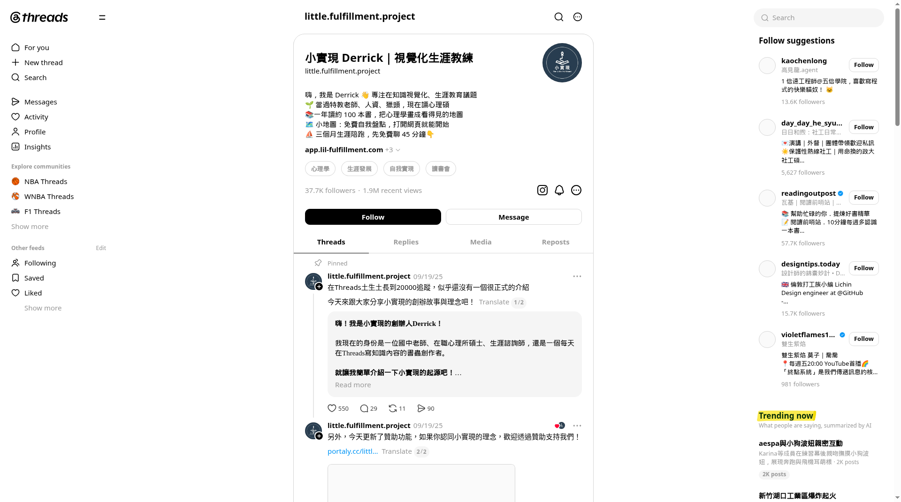
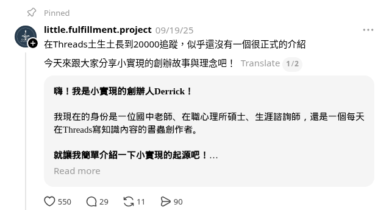

Pratchett「為什麼要離開？」語錄
純文字語錄；reposts 377 為樣本最高
2.7K · 7 · 377 · 218
SupaThreadsVol. 2026 · Account Reverse
Threads reverse engineering
把心理學與書畫成「看得見的地圖」，再把地圖做成可以玩的測驗與 App。這份報告拆解：37.7K 追蹤背後，觸及與轉換是怎麼被分層製造的。
用「權威名字＋框架圖卡」換收藏與分享，再用「我花了 N 小時做了一個測驗」把分享流量導進小地圖 App。
本報告僅依公開貼文與互動數推演。事實＝樣本中直接可見；推論＝我的解讀。追蹤成長率、點擊、註冊轉換看不到，不虛構（唯一的註冊數字「400 個註冊用戶」為作者自述）。Threads 隱藏 0 值，只顯示 1–3 個數字的列無法對應欄位，不納入比較。樣本僅涵蓋 07/17/26–10/23/26，約 3.5 個月。
一個前特教老師／人資／獵頭、現讀心理碩的人，把心理學與書「畫成地圖」日更，並把高分享的框架升級成可玩的測驗，最後收進自己的生涯 App「小地圖」與三個月陪跑。


Pratchett「為什麼要離開？」語錄
純文字語錄；reposts 377 為樣本最高
2.7K · 7 · 377 · 218
《原子習慣》三種決策層級圖
書名權威＋一張圖講完
1.6K · 14 · 204 · 474
30 小時做「興趣×意義感」測驗
shares 656 為樣本最高；分享／按讚比 ≈0.79
827 · 23 · 111 · 656
欄位：likes · replies · reposts · shares。另一篇高峰：無聊倦怠 vs. 職業倦怠（08/08）675 · 10 · 49 · 212。
職涯卡關的 25–35 歲上班族（推論）
倦怠、意義感、價值觀、休息——話題集中在「工作還行但不知道為什麼」。
可收藏的框架＋自我盤點
想用一張圖替自己的狀態命名，最好能測出結果。
小地圖 App／陪跑
Bio 寫明「免費自我盤點」與「先免費聊 45 分鐘」（事實）。
推論：帳號提供的主價值是「被命名」＋「有工具可用」，陪伴與身份認同是次要。讀書會／愛讀書的人是第二圈受眾（書摘支柱、「一年讀約 100 本書」）。
「在職場上的不滿意，簡單可以分兩類：1. 無聊倦怠 2. 職業倦怠」
事實：前四名中 2 篇是「區分／分層」圖卡（倦怠兩類、決策三層），另有「休息其實有四種」365 likes。純安慰型（如 Kelly McGonigal 自我苛刻長文）未擷取到數字。推論：爆點不是「被安慰」，而是「終於有詞形容我」。此帳號的命名偏狀態命名（我是哪種倦怠），而非身份標籤（我是哪種人）。
事實：replies 在樣本中普遍很低（多為個位數）；最高的是測驗帖 23 與「我決定自己做一個網頁 App，有人會有興趣嗎？」22（該帖僅 107 likes）。shares 最高的是測驗 656、原子習慣 474。推論：shares 靠「可收藏框架／可測工具」，replies 靠直接提問＋作者本人的計畫，不是靠可爭辯命題。這個帳號幾乎不做爭議主張——所以 replies 天花板低。原 brief 假設的「身份翻轉帶 shares、可爭辯主張帶 replies」只部分成立：前半改為「框架／工具帶 shares」，後半在本樣本中缺乏爭議帖可驗證。
事實：多數串為兩段式；第 1 段＝hook＋圖卡輪播（1/2–1/9），第 2 段＝解說或連結；hook 常帶書名號或研究者名。推論：固定殼讓讀者在動態中一眼認出「又是那種可存的圖」，並讓作者以讀書筆記為原料日更。
事實：連結多放在第 2 段（測驗、電子報 kit.com、活動報名），或寫「測驗連結在我的 Threads 主頁」；置頂是創業故事，第 2 段放贊助連結（portaly.cc）；Bio 連結 app.lil-fulfillment.com。純連結帖（08/15 電子報）僅 11 likes。推論：主文負責觸及、第 2 段與置頂負責轉換；單獨發 CTA 幾乎無觸及——轉換必須寄生在高觸及串上。
「花了30小時，把『興趣』跟『意義感』開發成線上測驗… 有人會想玩玩看嗎？」
事實：分享／按讚比：測驗帖 ≈0.79、念能力測驗 61/103 ≈0.59、原子習慣 ≈0.30、Pratchett ≈0.08。作者自述某日「又湧入了 400 個註冊用戶」。推論：測驗是最強的分享機制，也是最短的 App 漏斗；「我花了 N 小時」同時提供努力證明與好奇心。註冊與測驗的因果無法從公開資料確認。
事實：最高 2.7K 是語錄，但其他語錄列多數只顯示個位到兩位數字（欄位不明）。推論：語錄的上限高、變異大，且無法導向 App；可當低成本補位，不宜當主力。
| Pattern | 原始案例 | 可重複模板 |
|---|---|---|
| 狀態二分 | 無聊倦怠 vs. 職業倦怠 | 「你的____其實分兩種：A 和 B」 |
| X vs. Y 區分 | 好的逃避 vs. 壞的逃避／有效果 vs. 有效率 | 「好的____ vs. 壞的____」 |
| N 種分類 | 休息其實有四種 | 「____其實有 N 種，解決的____完全不同」 |
| 權威＋數字 | 哥大教授：輸入／輸出 3:7 | 「〔機構〕教授發現，____的黃金比例是 X:Y」 |
| 書名＋比喻 | 《原子習慣》用三個比喻分三層決策 | 「《書名》用 N 個比喻，把____分成 N 層」 |
| 研究人數 | 心理學家研究了 220 個人 | 「心理學家研究了 N 個人，發現____」 |
| 努力證明＋邀請 | 花了 30 小時開發成線上測驗，有人想玩嗎？ | 「我花了 N 小時把____做成____，有人想試嗎？」 |
| 時事掛鉤測驗 | 9/1 友克鑫市→念能力測驗；七夕→遠距離健檢 | 「今天是____，所以我做了一個____測驗」 |
| 錯誤承認 | 我以為很簡單，但我錯了 | 「我以為____很簡單，但我錯了」 |
推論：真正的成長循環是「框架 → 測驗 → App → 公開回報」。語錄與書摘補觸及，但不進漏斗。作者 10/22 自述「Threads 演算法流量不穩，開始學 SEO、AEO」——顯示他自己也在把轉換層搬離單一平台。
定位軸心：40+ 成人運動員「續場」、AI 執行觀、大人的鬆弛感。移植的是機制，不是心理學題材。